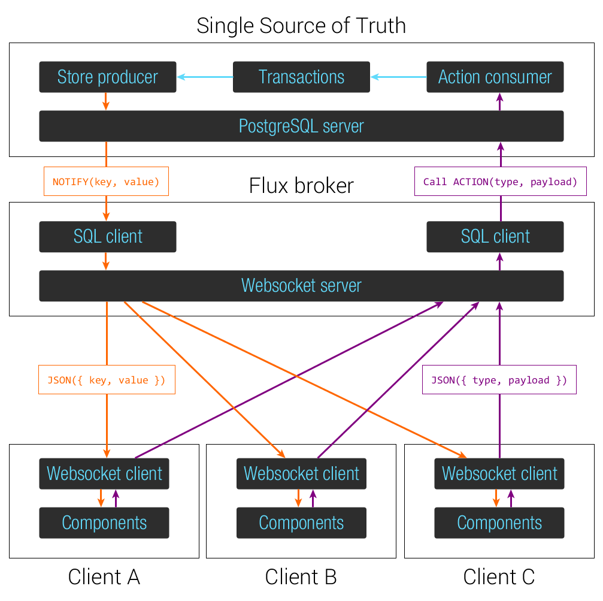
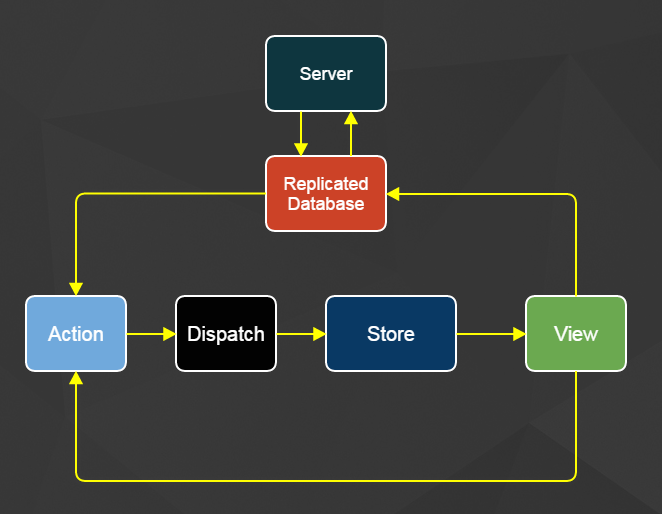

jrhicks.github.io
jrhicks.github.io
Replicate Architecture Ideas For React-Flux Apps
Data fetching and replication for Offline React Single Page Applications
Data fetching and replication for Offline React Single Page Applications
In client side routing, I settled on React Router being a robust-flux-compatible way to navigate screen space in SPA, but only reached inspiration on how to navigate data space. I looked into Dan Abramov's Content Stores Pattern, Facebook's Relay Architecture, and a home-brewed Offline Partitions Store

Dan Abramov's Content Stores approach is pure flux!. You have a content store for each entity type. Server actions dispatch to all stores, the stores inspect the response and harvest any data that pertains to them. The views listen to stores and render as needed.
Facebook's Relay approach is pure decoupling! Statically declare the data needs of a component within itself. Eliminate creating and maintaining custom server end-points that match the needs of each component (and subcomponent) on the page.

Elie Rotenberg who writes about Million User Webchat has an awesome FLUX pattern for single state-state-of-truth. Even more interesting to me is the replacement of the dispatcher with PGSQL triggers.

It goes through a lot of layers to get their, but the client component essentially updates the world by talking to the database. This looks a little like updating shared-mutable-state, but I think this architecture shows that there is a difference between writing to a database (that notifies and dispatches) is different than writing to shared mutable state.
I liked the pure flux of Dan's approach, the pure decoupling of Relay, and the database-as-a-notifier approach of Full Stack Flux PGSQL. How could I combine all these ideas, into an architecture that relaxed the importance of single state of truth in favor of higher availability and eventual consistency. I came up with an "Eventually Consistent Flux Pattern".

The replicated database only replicates subsets of the data on the server, these subsets are requested by the views when components mount. Similar to Relay, the components control what data is fetched! In this example we get the projectId from the router and tell the replicated database to include the notes and contacts for this project.
componentWillMount() {
let projectId = parseInt(this.getParams().projectId);
ReplicatedDatabase.addSubscription('note', {project_id: projectId} );
ReplicatedDatabase.addSubscription('contact', {project_id: projectId} );
},
All the data is fetched by the ReplicatedDatabase and stored normalized into an in-memory database with persistence options. The replicated database can syndicate its changes to actions and from there we follow the traditional flux pattern.
The ReplicatedDatabase keeps track of cursor information. I've removed validation, authenticaion, and authorization for simplicity, but here is an example RubyOnRails controller for download updates from the server.
#SERVER
class OfflineController < ApplicationController
def download_updated()
scope = JSON.parse(params[:scope])
collection = scope[:collection]
filter = scope[:filter]
# Get ActiveRecord Class For Requested Entity From String
m = collection.camelize.constantize
if scope[:lastUpdatedCursor]
ci = scope[:lastIdCursor]
cu = DateTime.parse(scope[:lastUpdatedCursor])
data = m.where(filter)
.where(["updated_at > ? or (updated_at=? and id>?)", cu, cu, ci])
.order("updated_at asc, id asc")
.limit(250)
else
data = m.where(filter)
.order("updated_at asc, id asc")
.limit(250)
end
render text: data.to_json
end
end
Here is the front end code in the Replicated database
// REPLICATED DATABASE
import agent from 'superagent-promise';
async downloadUpdatesFor(subscription) {
let i = subscription.lastIdCursor;
let d = subscription.lastUpdatedCursor;
do {
let scope = {
collection: subscription.collection,
filter: subscription.filter,
lastIdCursor: i,
lastUpdatedCursor: d
};
let scopeJson = encodeURIComponent(JSON.stringify(scope));
let url = `/offline/download_updated?scope=${scopeJson}`;
let response = await agent.get(url).end();
let data = JSON.parse(response.text);
await loadData(subscription, data);
let lastItem = data[data.length - 1];
if (lastItem) {
i = lastItem.id;
d = lastItem.updated_at;
}
} while (data.length > 0)
}
Using LokiJS for storing the data. Handling server updates would look something like:
for (let serverRecord of data) {
let localRecord = collection.findOne({id: serverRecord.id});
if (localRecord) {
# TODO
}
else {
collection.insert(serverRecord);
subscription.recordsDownloaded += 1;
subscription.save
}
}
I use this basic insertion algorithm to sync 10,00 records. Here is how it performs:
You can checkout the full project here https://github.com/jrhicks/OPStoreExample
git clone https://github.com/jrhicks/LokiJS-Flux-Example.git
cd LokiJS-Flux-Example
bundle install
rake db:setup
npm install
foreman start